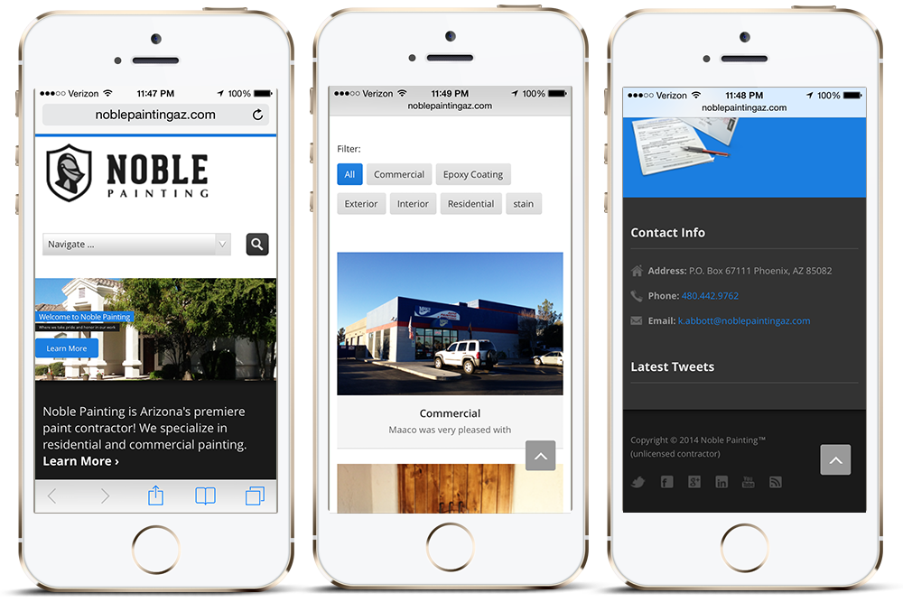

Noble Painting Website


- 
Project info
Background
Noble Painting was a new small painting business located right here in Phoenix, Arizona. Kenny, the owner was in need of a professional looking web site to help promote his new business and gain new customers. He was referred to me by a friend and a wanted a site where he could update content and make blog post himself.
Process and Solution
Because he wanted to the ability to edit and add content himself, I built his site on Wordpress. After doing some market research I realized that most of the websites for small painting businesses in Phoenix, AZ looked out dated and weren’t mobile friendly. So now that Kenny has a sleek, modern, and responsive website, he’ll definitely have an advantage when potential customers are researching local painting businesses. Ever since the site launch Kenny said he's had to hire more employees just to handle the work load that's been coming in.